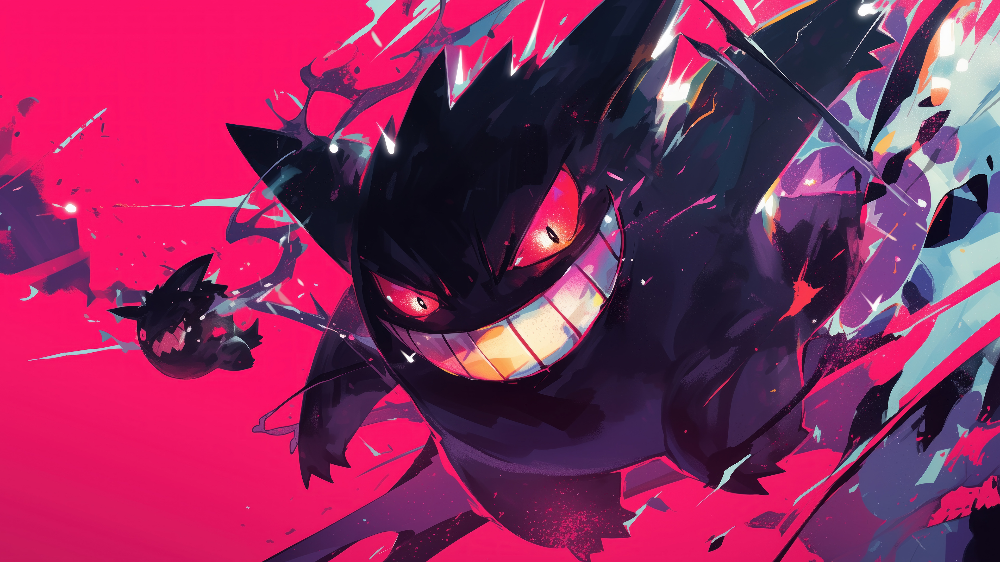

LISTA
Videojuegos de la primera generación
Los videojuegos que conforman esta generación son:
Pokémon Rojo
Pokémon Azul
Pokémon Amarillo

Pokémon Rojo
Título original: ポケットモンスター 赤 (Pocket Monsters Aka)
Lanzamiento:
- Japón: 27 de febrero de 1996
- Internacional: 1998 (EE. UU.) / 1999 (Europa)
Plataforma: Game Boy
Desarrollador: Game Freak
Distribuidor: Nintendo
Descripción:
Pokémon Rojo es una de las dos primeras ediciones de la saga Pokémon. El jugador toma el papel de un joven entrenador que parte desde Pueblo Paleta con la misión de capturar, entrenar y enfrentar Pokémon para convertirse en el Campeón de la Liga Pokémon de la región de Kanto.
Pokémon iniciales:
- Charmander
- Squirtle
- Bulbasaur
Características principales:
- Introduce el concepto de versiones paralelas, con Pokémon exclusivos para fomentar el intercambio entre jugadores.
- Permite combates e intercambios mediante el Cable Link de Game Boy.
- Incluye 151 especies de Pokémon (algunos solo disponibles mediante intercambio).
- Sistema de combate por turnos.
- Rival principal: Blue (Gary en el anime), nieto del Profesor Oak.
Curiosidades:
- Pokémon Rojo fue lanzado junto a Pokémon Verde en Japón. La versión Azul japonesa fue una reedición posterior con gráficos y textos mejorados.
- La versión internacional de Pokémon Rojo está basada en esa reedición japonesa.
Pokémon Azul
Título original: ポケットモンスター 青 (Pocket Monsters Ao)
Lanzamiento:
- Japón: 15 de octubre de 1996 (reedición de Rojo/Verde)
- Internacional: 1998 (EE. UU.) / 1999 (Europa)
Plataforma: Game Boy
Desarrollador: Game Freak
Distribuidor: Nintendo
Descripción:
Pokémon Azul es la versión complementaria de Pokémon Rojo. Ofrece la misma historia y jugabilidad, pero con diferencias en los Pokémon disponibles, pequeños ajustes gráficos y mejoras en los textos. El jugador también busca completar la Pokédex, derrotar a los ocho líderes de gimnasio y alcanzar la cima de la Liga Pokémon.
Pokémon iniciales:
- Charmander
- Squirtle
- Bulbasaur
Características principales:
- Presenta Pokémon exclusivos diferentes a los de la edición Roja.
- Mejoras en los sprites de Pokémon y en la interfaz respecto a las primeras versiones japonesas.
- Compatible con el intercambio y combate mediante Cable Link.
- Misma trama y personajes que Rojo.
Curiosidades:
- La versión Azul japonesa se vendía originalmente por correo a través de la revista CoroCoro Comic.
- La versión Azul internacional es en realidad una combinación de Rojo y la Azul japonesa, con varios ajustes visuales.
Pokémon Amarillo
Título original: ポケットモンスター ピカチュウ (Pocket Monsters Pikachu)
Lanzamiento:
- Japón: 12 de septiembre de 1998
- Internacional: 1999
Plataforma: Game Boy
Desarrollador: Game Freak
Distribuidor: Nintendo
Descripción:
Pokémon Amarillo está inspirado en el anime de Pokémon y recrea la aventura de Ash Ketchum. A diferencia de Rojo y Azul, el Pokémon inicial es un Pikachu que se niega a entrar en su Poké Ball y te acompaña fuera de ella durante toda la aventura.
Pokémon inicial:
- Pikachu
Características principales:
- Pikachu reacciona emocionalmente según cómo lo trates.
- Se pueden obtener los tres Pokémon iniciales (Bulbasaur, Charmander y Squirtle) en una sola partida.
- Incluye a Jessie y James del Team Rocket, siguiendo el estilo del anime.
- Mejora gráfica respecto a Rojo y Azul.
- Compatible con Pokémon Stadium en Nintendo 64.
Curiosidades:
- Fue el primer juego donde un Pokémon sigue al jugador fuera de su Poké Ball.
- Esta mecánica inspiró características de juegos posteriores como HeartGold & SoulSilver y Pokémon: Let's Go, Pikachu!.